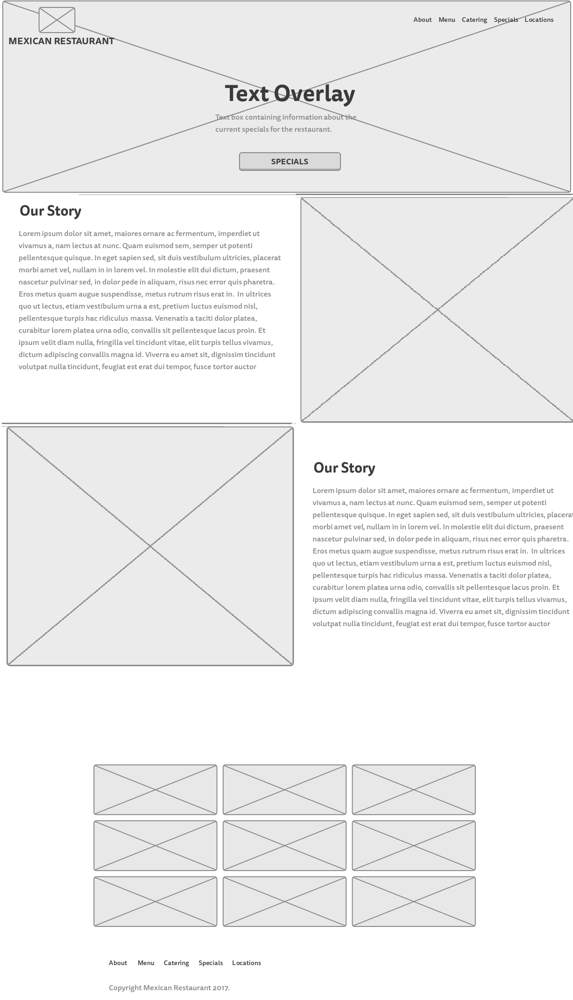

Toro Bailando is a website theme designed for restaurants. I began by envisioning what features would provide a great user experience for web visitors who may browse a restaurant web page. I mapped out such features like an interactive menu and an image gallery to display foods and the ambiance of the eatery. I coded the website theme using HTML, CSS, Bootstrap and jQuery. I also included an online contact form and a reservation form to increase interactivity between the website and the web visitor to generate business. The logo and images are from free Creative Commons licensing sources.
I had some ideas in mind when it came to the website's design and layout. I knew I had to creatively display the rich text content and colorful images in an original way while making it as accessible as possible to users, so I tried to strike a balance between text and media content while prioritizing that content from top to bottom.
A tab interface provides an interactive menu that lists all the various food items using JavaScript. This helps reduce the amount of scrolling visitors would need to perform to read the text content. If JavaScript is disabled in the web browser, then the text content would be displayed on a single web page without tabs much like a table would.

This website's design is mobile-first, meaning it looks great on your desktop and the visual appeal and user experience is not diminished when you browse this website theme on a smartphone or tablet.